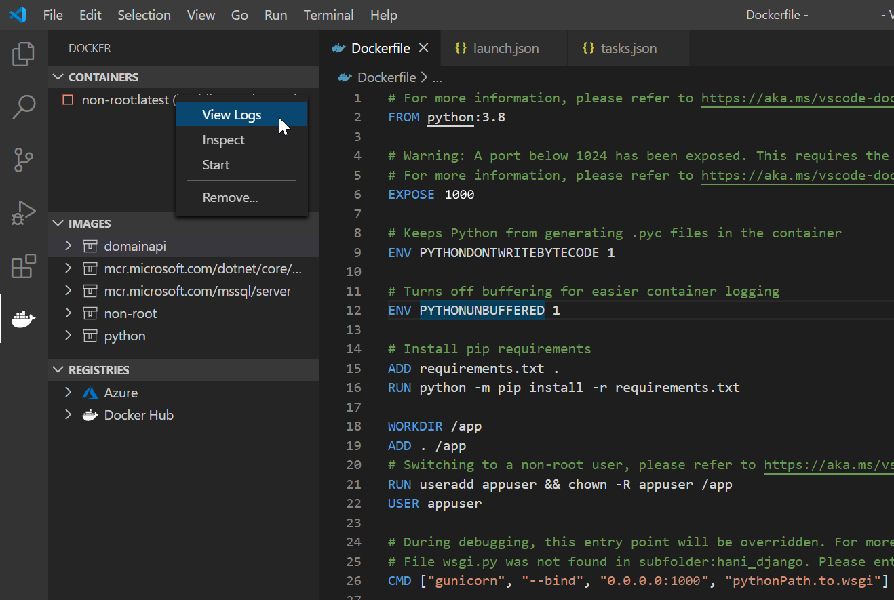

Configure your Python containers
When containerizing an application for production, your goal should be to port existing code into a separate runtime environment without introducing unforeseen security concerns. For this reason, we recommend selecting the default port for Python: Django (8000) or Python: Flask (5000) when executing the Add Dockerfiles to Workspace command, or opting for a port greater than 1023. This will allow VS Code to configure the Dockerfile with non-root access and prevent a malicious user from elevating permissions in the container, ultimately obtaining host machine root access. When you choose Python: General, there is no port selection, so the Docker extension configures non-root access by default. In all cases, you must ensure each resource (such as ports and files) modified or used by your application can be accessed by a non-root user in your container.
If a user selects ports less than 1024 when adding Dockerfiles to workspace, by default, we cannot scaffold a Dockerfile that will run the container as a non-root user. This is because ports in this range are called well-known or system ports and must execute with root privileges in order to bind a network socket to an IP address.
This guide will help you to:
- Configure a non-root user in your application by modifying your Dockerfile and
tasks.json. - Fix potential errors due to running as a non-root user.
Running your containerized app as a non-root user
The Add Dockerfiles to Workspace command for Django and Flask automatically sets up non-root privileges if you choose a non-system port. If your current Dockerfile and tasks.json is not setup for non-root usage, follow these steps:
- Run Add Dockerfiles to Workspace.
- Choose Python: Django or Python: Flask.
- Select a port greater than 1023.
- Overwrite your current Dockerfile and
tasks.json.
If you chose Python: General, non-root privileges will be set up by default, but you may want to modify your Dockerfile and tasks.json as described below to add port access.
Docker file changes
Within the Dockerfile, you must expose a non-system port, create a working directory for your app code, and then add a non-root user with access to the app directory. Lastly, ensure your exposed port matches the port binding of the Gunicorn command. The CMD command below configures Gunicorn for a Django container. For more information on configuring Gunicorn, refer to the documentation on Gunicorn configuration for Django/Flask apps.
# 1024 or higher
EXPOSE 1024
# ... other directives such as installing requirements.txt file
# Creates /app in container if it does not already exist
# Ports code into /app
WORKDIR /app
ADD . /app
# Creates a non-root user and adds permission to access the /app folder
RUN useradd appuser && chown -R appuser /app
USER appuser
CMD ["gunicorn", "--bind", "0.0.0.0:1024", "pythonPath.to.wsgi"]
Modifications to tasks.json for Django\Flask apps
After choosing a non-system port and setting up the container to run as a non-root user, we must ensure the docker run task within tasks.json also expects the same port.
Django apps
{
"type": "docker-run",
"label": "docker-run: debug",
"dependsOn": [
"docker-build"
],
"python": {
"args": [
"runserver",
"0.0.0.0:1024", //<- Change the number after the colon
"--nothreading",
"--noreload"
],
"file": "manage.py"
}
}
Flask apps
{
"type": "docker-run",
"label": "docker-run: debug",
"dependsOn": [
"docker-build"
],
"dockerRun": {
"env": {
"FLASK_APP": "path_to/flask_entry_point.py"
}
},
"python": {
"args": [
"run",
"--no-debugger",
"--no-reload",
"--host", "0.0.0.0",
"--port", "1024" //<- Change this port number
],
"module": "flask"
}
}
Potential errors when running as a non-root user
Following the guide up to this point should eliminate most configuration issues caused by running as a non-root user. However, we have compiled a non-exhaustive list of common errors you may run into.
If you encounter any other problems due to running as a non-root user, please report the issue in the Docker extension repository. We love your feedback!
Invalid file permissions in the container
If you are reading, writing, or creating a file within your container, a non-root user might not have access to folders or files in specific directories unless directly given.
For example, if you added to your Dockerfile:
RUN mkdir /extra
The /extra folder will be created in the root directory of your container outside of the /app folder. Therefore, if you tried to create and write to a file named file.txt with:
f = open("/extra/file.txt", "a")
f.write("We wrote some text")
f.close()
You will see the error:
Exception has occurred: PermissionError
[Errno 13] Permission denied: '/extra/file.txt'
To solve this issue, we need to correctly add permissions to the non-root user to gain access to this specific file or directory in the container. Within your Dockerfile, add:
# Creates a non-root user with an explicit UID and adds permission to access the /app folder
RUN useradd -u 5678 appuser && chown -R appuser /app
# Adds permission for appuser (non-root) to access the /extra folder
RUN chown -R appuser /extra
Note: This is just one example of how to add permissions in a container. There are many ways to do so, and it is your responsibility give the least permission possible to specific files and folders.
Invalid file permissions on the host (Linux)
In the previous example, we showed you how to add permissions to a file or folder on the container as a non-root user. However, if you are trying to access a folder on the host machine from within the container as a non-root user, the user ID or group ID in the container must have access to the files on the host. To solve this issue in Linux, you might need to set file access control lists (setfacl).
If you have a folder named /share on your host machine and try to access this folder before the access control list is properly set, you will likely receive this error:
PermissionError: [Errno 13] Permission denied: '/share/logs/log.txt'
In order to give access to a non-root user appuser from within the container, follow these steps:
Copy the explicit UID from your Dockerfile (
5678in the example above).From the host machine's command line, run one of these commands:
# Example of giving a User ID with the value of 5678 access to the /share folder on the host machine setfacl -m u:5678:rwx /share # Example of giving a Group ID with the value of 6789 access to the /share folder on the host machine setfacl -m g:6789:rwx /share
Binding to a low-range port
If you hit kb(workbench.action.debug.start) to start your container and it immediately stops without producing any logs in the Debug Console, this error could mean you are exposing a system-port (ports less than 1024) while attempting to run as a non-root user. This may be hard to catch because, by default, containers are removed after debugging is stopped. To diagnose this port error, follow these steps:
Open and modify your
launch.jsonfile:{ "name": "Docker: {Configuration Name}", "type": "docker", "request": "launch", "preLaunchTask": "docker-run: debug", "removeContainerAfterDebug": false, //<- add this line // ... the rest of the launch configuration }Hit
kb(workbench.action.debug.start)to run your container again.After the container exits once more, navigate to the Docker extension, right-click the container, and select View Logs.

In a Django app, you may see the error:
Error: You don't have permission to access that port.
In a Flask app, you may see the error:
self.socket.bind(self.server_address)
PermissionError: [Errno 13] Permission denied
The image above is a problematic configuration because a port less than 1024 was selected.
To solve this issue, modify your Dockerfile and tasks.json file in the manner shown in the Running your containerized app as a non-root user section.